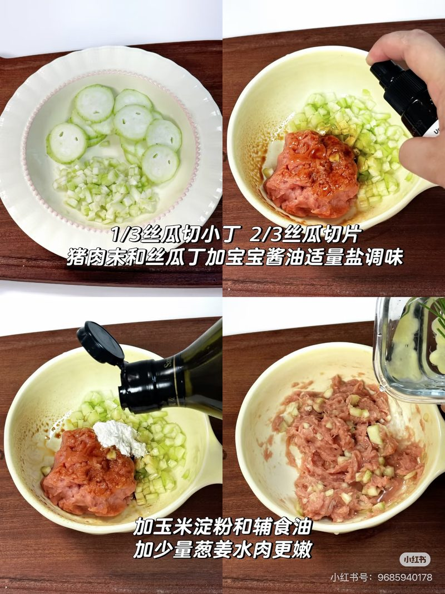
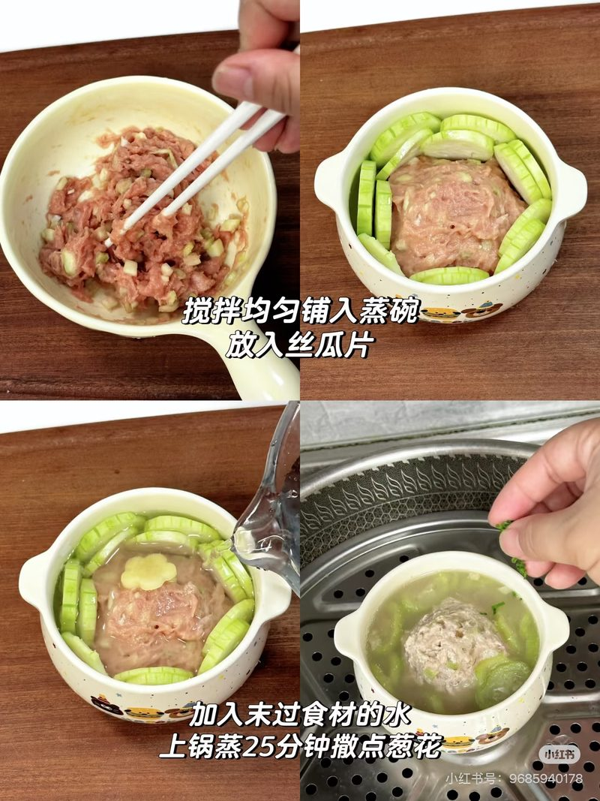

早餐
南瓜胡萝卜燕麦小米粥 + 水煮蛋（半个）
碳水 小米 + 燕麦蔬菜 南瓜 + 胡萝卜蛋白 全蛋半个脂肪 —
食材
- 小米约 8–10g
- 即食燕麦约 5g
- 南瓜约 20g，去皮切小块
- 胡萝卜约 15–20g，去皮切小块
- 鸡蛋半个（全蛋水煮后取半个）
做法
- 小米、南瓜、胡萝卜加水煮至软烂，下燕麦再煮几分钟，压碎打细成粥/糊；不加盐糖。
- 水煮蛋至全熟，取半个切小块或捣碎同餐。
粥/糊须软烂；蛋全熟，本餐半个。不加盐糖。
午餐
番茄鲜虾豆腐山药羹 + 米饭（生米约 20–25g）
碳水 软饭约 20–25g + 山药蔬菜 番茄蛋白 鲜虾 + 豆腐脂肪 辅食油合计约 5g
食材
- 鲜虾约 40–45g，去虾线
- 嫩豆腐约 30g 切小丁
- 番茄约 30g 去皮切碎
- 山药约 20g 切小丁
- 姜片；辅食油合计约 5g（含炒用油）；不加盐
- 软米约 20–25g（生米）
做法
- 番茄少油炒出汁，加水下姜片、山药煮软。
- 下豆腐与虾，煮至虾全熟变色；整餐辅食油合计约 5g（含炒用油；不足再补足，勿另加一份 5g）。
- 配软饭：生米约 20–25g 煮软；羹可少许拌饭。
- 不加盐、酱油、生抽。
虾全熟、切小；鱼虾只放午餐。软饭生米约 20–25g。
下午餐
南瓜小馒头 + 西兰花蒸蛋
碳水 小馒头蔬菜 西兰花 + 南瓜（馒头内）蛋白 全蛋脂肪 —
食材
- 南瓜小馒头 1–2 个（可买成品或家做；看配料无盐无糖）
- 鸡蛋 1 个 + 温水约 1.5 倍
- 西兰花适量，焯软切碎
做法
- 小馒头撕小块手抓；可略蒸热。
- 蛋打散加温水过筛，拌入西兰花碎，盖盘小火蒸 10–12 分钟至凝固全熟，切小块。
- 不加盐糖。
市售馒头看配料，含盐含糖不选；蒸蛋全熟。
周二 11.03
鸡蛋水饼 · 丝瓜牛肉丸汤 · 菠菜猪肝粥
早餐
鸡蛋水饼 + 黑芝麻核桃糊
碳水 少量面粉 + 米蛋白 全蛋脂肪 黑芝麻 + 核桃
食材
- 鸡蛋 1 个（全蛋）
- 面粉少量 + 温水适量
- 少量油；不加盐糖
- 大米或小米约 10–12g
- 熟黑芝麻碾碎少许
- 核桃少量
做法
- 全蛋打散加温水、面粉调稀糊，少油小火摊薄水饼，两面熟透，切条。
- 米煮软，加黑芝麻与核桃打成细糊，调稀；芝麻核桃须碾细防呛。
- 不加盐糖。
芝麻核桃碾细防呛；不加盐糖。
午餐
丝瓜牛肉丸汤 + 米饭（生米约 20–25g）
碳水 软饭约 20–25g蔬菜 丝瓜蛋白 牛肉末约 40–50g脂肪 辅食油合计约 5g
食材
- 牛肉末约 40–50g
- 丝瓜 1 小根，去皮：1/3 切小丁拌入肉末，2/3 切片
- 玉米淀粉少许
- 辅食油合计约 5g；葱姜水少许
- 葱花几粒（可选）；不加盐、酱油、生抽、宝宝酱油
- 软米约 20–25g（生米）
做法
- 丝瓜去皮，1/3 切小丁、2/3 切片。
- 牛肉末加丝瓜丁、少许玉米淀粉、辅食油和少许葱姜水，顺一个方向搅匀上劲（不加宝宝酱油、不加盐）。
- 肉馅铺平在蒸碗中间，丝瓜片围一圈，加清水没过，上锅蒸约 25 分钟至牛肉全熟；可撒几粒葱花。
- 出锅后肉丸压碎/切小，连汤和丝瓜同吃；整餐辅食油合计约 5g（不足再补足，勿另加一份 5g）。
- 配软饭：生米约 20–25g 煮软；汤可少许拌饭。


做法步骤参考图（图源小红书）；用量以上面蕉蕉分量为准。原教程用猪肉 + 宝宝酱油，蕉蕉版换成牛肉末、不加任何调味（无盐无酱油）。跟小红书步骤，但牛肉末替代猪肉、不加宝宝酱油/任何酱油生抽盐糖；牛肉务必全熟。软饭生米约 20–25g。
下午餐
菠菜猪肝粥
碳水 大米蔬菜 菠菜蛋白 猪肝（补铁）脂肪 辅食油约 5g
食材
- 猪肝约 15–20g，去筋膜
- 菠菜约 30–40g
- 大米约 15–20g
- 姜片少许；辅食油合计约 5g；不加盐
做法
- 猪肝冷水浸泡去血水，焯烫后剁细。
- 大米先煮至半烂，下猪肝末煮至全熟。
- 菠菜焯水切碎后下锅，煮成偏稀粥；整餐辅食油合计约 5g（不足再补足，勿另加一份 5g）。
- 不加盐、酱油、生抽。
猪肝本周仅此一次；务必全熟。
早餐
苹果山药胡萝卜小黄米粥 + 水煮蛋
碳水 小黄米 + 山药蔬果 苹果 + 胡萝卜蛋白 全蛋脂肪 —
食材
- 小黄米约 10–12g
- 苹果约 20g，去皮去核切小块
- 山药约 15–20g，去皮切小块
- 胡萝卜约 15–20g，去皮切小块
- 鸡蛋 1 个（全蛋水煮）
做法
- 小黄米、苹果、山药、胡萝卜加水煮至软烂，压碎打细成粥/糊；不加盐糖。
- 水煮蛋至全熟，可切小块或捣碎同餐。
粥/糊须软烂；蛋全熟。不加盐糖。
午餐
莲藕排骨汤 + 米饭（生米约 20–25g）
碳水 软饭约 20–25g + 莲藕蔬菜 莲藕蛋白 排骨肉脂肪 排骨汤 + 辅食油合计约 5g
食材
- 猪小排 2–3 块（拆肉约 35–40g）
- 莲藕约 30g，切小块
- 姜片；清水；不加盐、酱油、生抽
- 软米约 20–25g（生米）
做法
- 排骨冷水下锅焯水洗净。
- 排骨、藕块、姜片加水，小火炖约 1.5 小时至藕软糯、肉脱骨。
- 排骨肉拆下撕碎，确认无碎骨；藕块切小块。整餐辅食油合计约 5g（含汤油；不足再补足，勿另加一份 5g）。
- 配软饭：生米约 20–25g 煮软；汤可少许拌饭。
务必拆骨撕碎、检查碎骨；汤底无盐。软饭生米约 20–25g。
下午餐
时蔬奶酪燕麦烘蛋（加 40ml 悦鲜活鲜奶）
碳水 燕麦蔬菜 时蔬丁蛋白 全蛋 + 奶酪半块脂肪 奶酪 + 鲜奶
食材
- 鸡蛋 1 个
- 即食燕麦约 8–10g
- 奶酪半块切碎
- 时蔬丁（胡萝卜/西兰花/菠菜等）适量焯软
- 悦鲜活鲜奶约 40ml
- 不加盐
做法
- 蛋打散，拌入燕麦、奶酪碎、时蔬丁与鲜奶约 40ml。
- 倒入耐烤模具，烤箱/空气炸烤至表面凝固、中心全熟。
- 放温切小块；不加盐糖酱油。
本周鲜奶加到约 40ml（悦鲜活）；奶酪半块。
周四 11.05
红薯杂粮粥 · 彩椒牛肉饼 · 南瓜小馒头
早餐
红薯杂粮粥 + 水煮蛋 + 蒸胡萝卜
碳水 杂粮 + 红薯蔬菜 胡萝卜蛋白 全蛋脂肪 —
食材
- 小米/大米/燕麦等杂粮适量
- 红薯适量，蒸软压泥或切小丁
- 鸡蛋 1 个（全蛋水煮）
- 胡萝卜约 30–40g，去皮切条或小块
做法
- 杂粮加水煮至软烂，拌入蒸软红薯泥/丁成粥；不加盐糖。
- 水煮蛋至全熟，可切小块或捣碎同餐。
- 胡萝卜蒸 10–15 分钟至手指可压碎，切手抓条或压碎勺喂。
粥须软烂；蛋全熟；胡萝卜蒸到可压碎。
午餐
彩椒牛肉饼 + 软饭约 20–25g + 清蒸小青菜
碳水 软饭约 20–25g蔬菜 彩椒 + 小青菜蛋白 牛肉馅约 40–50g脂肪 辅食油合计约 5g
食材
- 牛肉馅约 40–50g
- 彩椒适量，切碎/擦丝
- 玉米淀粉少许（用于上劲/定型）
- 辅食油合计约 5g（含煎用油）；不加盐、酱油、生抽、糖、宝宝酱油
- 软米约 20–25g（生米）
- 小青菜适量
做法
- 牛肉馅与彩椒碎、玉米淀粉少许搅匀上劲（全程不加盐糖酱油/生抽/宝宝酱油）。
- 压成小饼，少油小火两面煎至全熟（切开无粉红）；整餐辅食油合计约 5g（含煎用油；不足再补足，勿另加一份 5g）。
- 配软饭：生米约 20–25g 煮软。
- 小青菜蒸/焯至软，切小同餐。
做法同上周 10.30 彩椒牛肉饼；不加任何酱油生抽盐糖；牛肉务必全熟。软饭生米约 20–25g。
下午餐
南瓜小馒头 + 一袋宝宝酸奶
碳水 小馒头蔬菜 南瓜（馒头内）蛋白 宝宝酸奶脂肪 —
食材
- 南瓜小馒头 1–2 个（可买成品或家做；看配料无盐无糖）
- 宝宝酸奶一袋
做法
- 小馒头撕小块手抓；可略蒸热。
- 配宝宝酸奶一袋。
- 不加盐糖。
市售馒头看配料，含盐含糖不选。
早餐
牛奶蛋花燕麦粥 + 蓝莓
碳水 燕麦水果 蓝莓蛋白 蛋 + 奶脂肪 —
食材
- 即食燕麦约 10–12g
- 配方奶或牛奶适量（约 80–100ml，煮粥用；非替代奶瓶两顿）
- 鸡蛋约 1/2–1 个，打散淋蛋花
- 蓝莓适量，洗净压碎或切半
做法
- 燕麦加水或少量配方奶煮软，边搅边淋入蛋液成蛋花，再补适量配方奶/牛奶调成粥；蛋须全熟。
- 蓝莓洗净压碎或切半同餐。
- 不加盐糖。奶瓶两顿照常，本餐用奶不计入替代。
蛋花须全熟；蓝莓压碎或切半防呛。
午餐
奶酪时蔬三文鱼烩饭（奶酪半块）
碳水 软饭约 20–25g蔬菜 时蔬丁蛋白 三文鱼 + 奶酪半块脂肪 辅食油合计约 5g
食材
- 三文鱼约 40–50g，去皮去刺切小丁
- 软米约 20–25g（生米）
- 时蔬丁（胡萝卜、西兰花、玉米等）适量
- 奶酪半块，切碎拌入
- 辅食油合计约 5g（含炒用油）；不加盐、任何调味
做法
- 少油下三文鱼丁炒至全熟变色，下时蔬丁翻软。
- 先按生米约 20–25g 煮成软饭，再与鱼蔬轻轻烩匀，拌入奶酪半块；整餐辅食油合计约 5g（含炒用油；不足再补足，勿另加一份 5g）。
- 仔细确认无刺；不加盐、酱油、生抽。
三文鱼全熟去刺；奶酪半块。
下午餐
牛肉小馄饨（自包，个数按食量）+ 青菜
碳水 馄饨皮蔬菜 青菜蛋白 牛肉馅脂肪 —
食材
- 牛肉馅无盐自包（个数按蕉蕉食量）
- 清水；汤里不加盐/酱油/紫菜虾皮
- 青菜约 25–30g（小油菜/小青菜等）
做法
- 自包牛肉小馄饨下开水，浮起后再煮 2–3 分钟，切开确认全熟。
- 青菜焯软切碎。
- 全程不加盐、酱油、生抽。市售含盐馄饨不选。
馄饨自包无盐，切开确认全熟；个数按食量。
周六 11.07
香蕉鸡蛋饼 · 清汤羊肉 · 紫薯蒸蛋
早餐
香蕉鸡蛋饼 + 山药玉米糊糊
碳水 少量面粉 + 米 + 山药蔬果 香蕉 + 玉米蛋白 全蛋脂肪 少量油
食材
- 香蕉适量压泥
- 鸡蛋 1 个（全蛋）
- 面粉少量 + 少量油；不加盐糖
- 大米或小米约 10–12g
- 玉米粒适量
- 山药约 15–20g，去皮切小块
做法
- 全蛋打散，加香蕉泥、少量面粉调成糊，少油小火摊成小饼，两面煎熟，切条。
- 米与山药加水煮软，下玉米再煮片刻，压碎打细成糊，调稀。
- 不加盐糖。
饼两面熟透切条；糊糊打细。不加盐糖。
午餐
清汤羊肉 + 生菜 + 面条
碳水 面条蔬菜 生菜蛋白 羊肉脂肪 辅食油合计约 5g
食材
- 羊肉约 40–50g（熟肉量；或带骨炖软后撕碎）
- 姜片；辅食油合计约 5g（含炒/炖用油）；不加盐、酱油、生抽
- 生菜适量，焯/水煮或蒸至软，切小
- 面条适量，煮至软烂，可切短段
做法
- 羊肉切小块清水炖至软烂，撕碎适合约 12 月龄；汤底无盐。
- 生菜焯/水煮或蒸至软烂，切小。
- 面条下开水煮至很软，可切短段；可与清汤同食。
- 整餐辅食油合计约 5g（含炒/炖用油；不足再补足，勿另加一份 5g）。不加盐、酱油、生抽。
羊肉炖至软烂撕碎；汤底无盐；面条煮软切短。
下午餐
紫薯蒸蛋 + 蓝莓
碳水 紫薯水果 蓝莓蛋白 全蛋脂肪 —
食材
- 紫薯适量，蒸软压泥/切小丁
- 鸡蛋 1 个（全蛋）+ 温水约 1.5 倍
- 蓝莓适量，洗净压碎或切半
做法
- 紫薯蒸软压泥或切小丁；蛋打散加温水过筛，拌入紫薯，盖盘小火蒸 10–12 分钟至凝固全熟。
- 蓝莓洗净压碎或切半同餐。
蒸蛋全熟；蓝莓压碎或切半防呛。
周日 11.08
鸡蛋饼 · 西葫芦蒸牛肉 · 蓝莓馒头
早餐
鸡蛋饼 + 豆浆 + 圣女果
碳水 少量面粉水果 圣女果蛋白 全蛋 + 豆浆脂肪 少量油
食材
- 鸡蛋 1 个（全蛋）
- 面粉少量 + 温水适量
- 少量油；不加盐糖
- 原味豆浆小半杯（约 60–80ml；自打须煮透）
- 圣女果适量，洗净去蒂，对半或切小
做法
- 全蛋打散加温水、面粉调稀糊，少油小火摊成小饼，两面熟透，切条。
- 豆浆放温后给小半杯；自打须煮沸后再小火煮透；不加糖。
- 圣女果洗净去蒂，对半或切小同餐（防呛）。
豆浆不替代配方奶；圣女果切小防呛。不加盐糖。
午餐
西葫芦蒸牛肉 + 米饭（生米约 20–25g）+ 清炒青菜
碳水 软饭约 20–25g蔬菜 西葫芦 + 青菜蛋白 牛肉约 40–50g脂肪 辅食油合计约 5g
食材
- 牛肉约 40–50g（馅或薄片/小丁）
- 西葫芦适量，去皮切薄片或小丁
- 姜片少许；辅食油合计约 5g；不加盐、酱油、生抽
- 软米约 20–25g（生米）
- 青菜适量（如小油菜/油麦菜）
做法
- 牛肉与西葫芦分层或拌匀，可少许辅食油，上锅蒸至牛肉全熟无粉红、西葫芦软透；切小适合约 12 月龄。
- 配软饭：生米约 20–25g 煮软；整餐辅食油合计约 5g（含炒用油；不足再补足，勿另加一份 5g）。
- 青菜少油清炒或焯至软，切小。
- 不加盐酱油生抽。
牛肉全熟无粉红；软饭生米约 20–25g。
下午餐
蓝莓馒头 + 宝宝酸奶
碳水 小馒头水果 蓝莓蛋白 宝宝酸奶脂肪 —
食材
- 小馒头 1–2 个
- 蓝莓适量，洗净压碎或切半（可拌馒头或同餐）
- 宝宝酸奶一小份
做法
- 小馒头撕小块；蓝莓洗净压碎或切半同餐。
- 配宝宝酸奶一小份。
- 不加盐糖。
馒头看配料无盐无糖；蓝莓切半防呛。